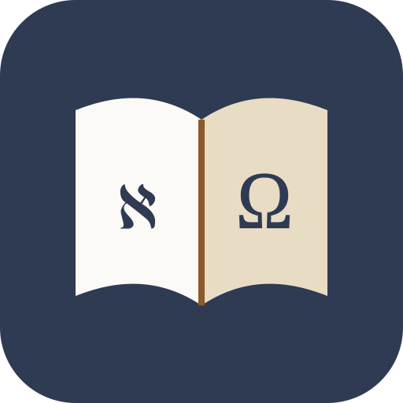

Bible Sources Open the appHebrew, the Greek New Testament and the Septuagint sit beside English or any of 30+ translations, verse by verse. Tap any word for its meaning and grammar, follow cross references, and see exactly where the ancient texts don't agree, where passages appear to contradict each other, and where the text describes or commands atrocities.
The original texts and the tools to study them, without switching between apps.
Every word of the Hebrew Old Testament and Greek New Testament, with English under each word.
The Greek Old Testament the apostles quoted most often, in Greek and in English, with its psalm numbers converted for you.
Every verse of the Hebrew Bible is compared with the Septuagint automatically, with the differences highlighted. There's also a curated table of New Testament quotations, plus 33 apparent contradictions (Kings vs Chronicles, the Gospels), each with manuscript evidence. Record your own verdict on each.
Tap a word to see its dictionary form, its grammar in plain English, a lexicon entry, and every other verse that uses it.
About 340,000 links between passages, ranked by usefulness. Problems are flagged: weak links, known contradictions, places where the Septuagint differs. Compare the wording of any two passages.
Hear Hebrew and Greek in modern or ancient pronunciation. See each passage in its historical setting, with archaeology, a timeline, and biblical claims checked against the record.
It runs in your browser, and you can add it to your home screen like any other app. Chapters you've read keep working offline.